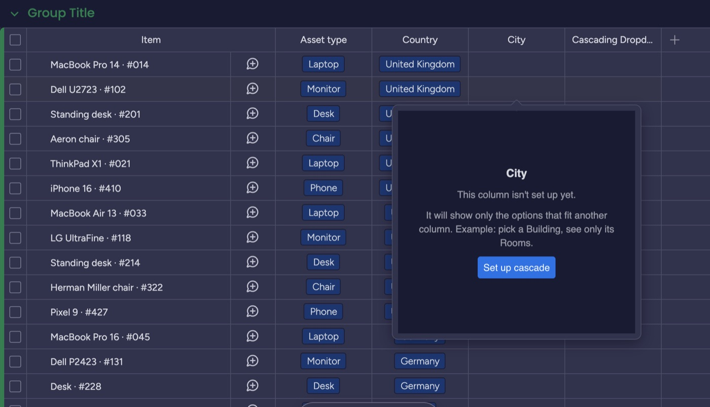
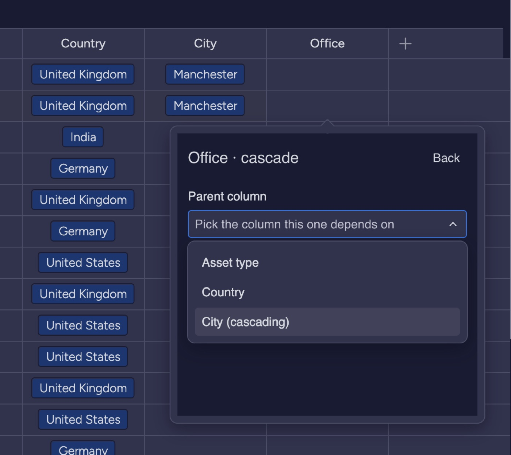
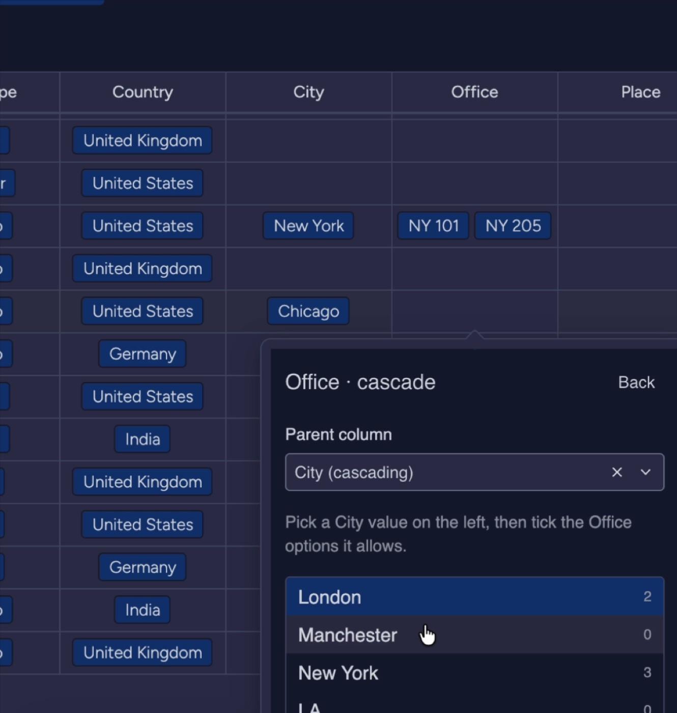
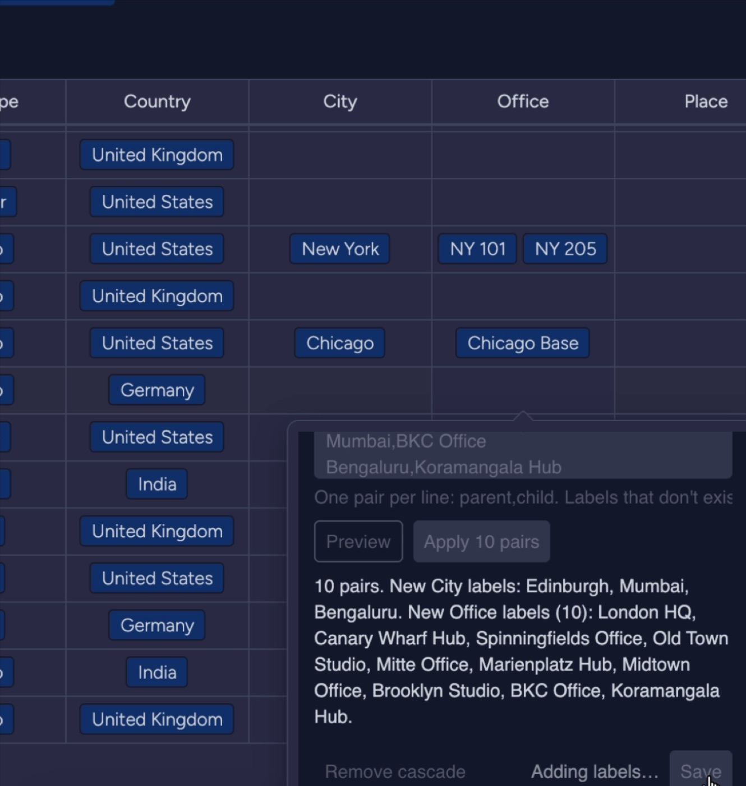
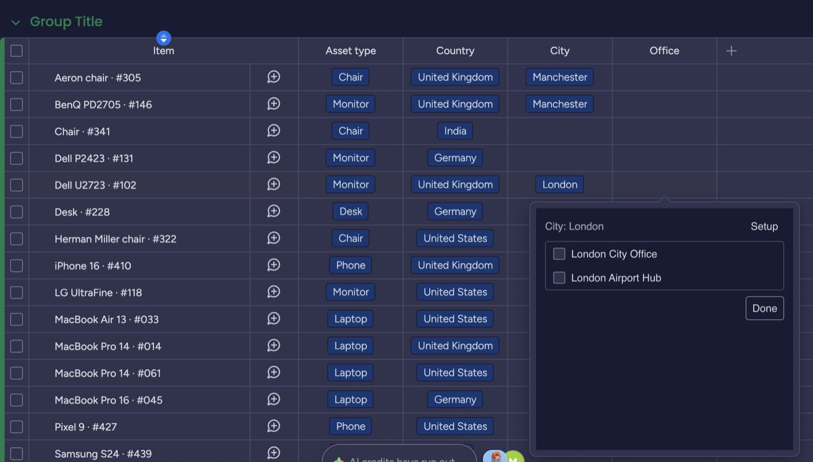

How to use Smart Dependent Dropdowns
Make one dropdown depend on another. Pick a City, and the Office column shows only the offices in that city.
Before you start
- A board with a Dropdown or Status column. This is the parent, for example Country or City.
- You must be the board owner or an account admin to set up a cascade. Members can pick values. Viewers and guests can only look.
- Each label in a column should be unique, for example London HQ, not just HQ.
- monday allows up to 1,000 labels in one dropdown column.
Install
- In monday.com, open the Apps marketplace.
- Search for Smart Dependent Dropdowns and click Install.
- Choose which workspaces can use it, then confirm.
First-time setup
1. Add the Cascading Dropdown column
On your board, click + at the right of the columns, find Cascading Dropdown, and add it. Rename it, for example Office. Click any cell in the new column: it asks you to set it up.

2. Pick the parent column
Choose the column this one depends on. It can be a Dropdown, a Status, or another Cascading Dropdown, so you can chain levels.

3. Tick which options belong to each parent value
Pick a value on the left, then tick the options it allows on the right. Use All or None to go faster. You can add new labels at the bottom of each list.

4. Or paste from Excel or CSV
Open Paste from CSV or Excel. Paste one pair per line: parent,child. Click Preview to check, then Apply. Labels that don't exist yet are created for you.

5. Save, then pick values
Click Save. Now click any cell in the column: only the options that fit that row's parent value appear. Long lists get a search box.

Good to know
| Situation | What happens |
|---|---|
| Parent is empty | The picker asks you to pick the parent first. |
| Parent changes later | The cell keeps its value and the picker warns that it no longer fits. |
| Multi-select parent | The picker shows options for every selected parent value. |
| Chains | Make a Cascading Dropdown the parent of another: Country, then City, then Office. |
| Remove a cascade | Open Setup and click Remove cascade. The column keeps its values and labels. |
Plans
| Free | Pro |
|---|---|
| 1 board, 2 cascades, CSV paste, search | Every board, unlimited cascades. One flat price for the whole account. |
Need help?
Email support@zedmere.com with your board link and what you expected to happen. We reply within 2 business days.